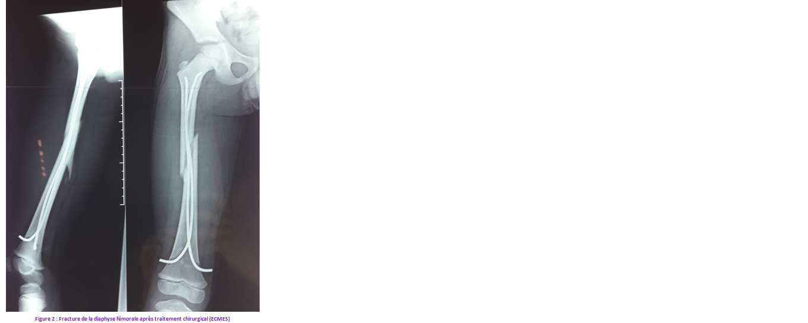
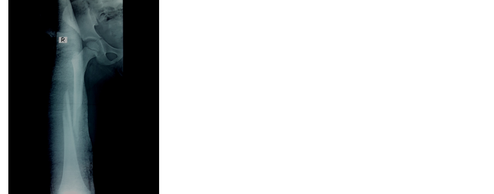
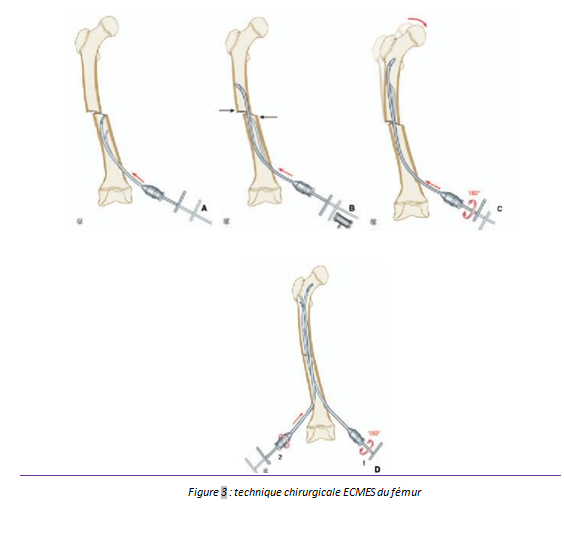

Cas clinique 7
Cuisse
Enfant de 7 ans, sans antécédents particuliers, victime d’un traumatisme au niveau du membre inférieur droit suite à une chute de sa hauteur sans autre point d’impact.
À l’examen on avait noté une déformation en crosse de la cuisse droite, une douleur à la palpation et une impotence fonctionnelle totale.
1.Quel est votre diagnostic ? Interprétez la radiographie. Figure 1 R1 C1 AP ++
2.Quelle est votre conduite à tenir en urgence ?R2
4.Quelle est votre conduite en post opératoire ? R4
5.Quelles sont les complications du traitement chirurgical ? R5
Réponse :
-
Fracture diaphysaire du fémur droit à trait spiroïde avec un chevauchement.
Réponse :
- -Chercher lésions associées et surveillance des constantes générales.
- -Pose d’une voie veineuse permettant l’administration d’antalgiques.
- -Réalisation d’une anesthésie locorégionale de type bloc crural : elle doit être effectuée avant toute autre investigation dès que le diagnostic de fracture du fémur est évoqué. Elle permettra la manipulation et l’installation indolore de l’enfant.
Réponse :
-
C’est une indication à l’embrochage centromédullaire élastique stable.
Sous anesthésie générale, sous scope : réduction du foyer fracturaire et stabilisation par deux broches de Metaizeau.(Figure 2)

Réponse :
L’hospitalisation dure 2 à 3 jours, la marche avec béquilles et sans appui est autorisée à j5. L’enfant peut retourner à l’école à J 15 et reprendre le sport à J 90. Les broches seront retirées entre le 4ème et le 8ème mois lorsque la corticalisation fémorale est suffisante
Réponse :
L’infection reste le principal risque dont les séquelles, bien que rares, peuvent être très sévères : séquestrations diaphysaires, pseudarthroses, inégalités, raideur articulair>e…
Commentaire 1
Les fractures diaphysaires du fémur représentent la troisième localisation par ordre de fréquence des fractures de l’enfant. Elles sont très variables avec classiquement une fracture médio-diaphysaire.
Elles sont rencontrées principalement chez le garçon (sex ratio : 3/1)
Les étiologies sont nombreuses et variables selon l’âge du patient :
- Entre 0-4 ans : chutes 40%, maltraitance 30%, accident de la voie publique 10%, traumatisme obstétricaux rares.
- Entre 6-10 ans : Accident de la voie publique 70%, chute 20%.
- Entre 13 et 15ans : Accident de la voie publique 70%, accident de sport 20%.
Commentaire 3
Le traitement chirurgical est de plus en plus utilisé surtout chez l’enfant de plus de 6 ans : c’est l’embrochage centromédullaire élastique stable.
Commentaire :
Figure 1

Pour approfondir :
Ces fractures ne nécessitent pas de classification particulière.
Il faudra bien préciser l’âge de l’enfant, le siège de la fracture (1/3 supérieur, moyen ou inférieur), le type de trait de la fracture, le nombre de fragments et d’éventuelles complications associées.
Pour approfondir :
L’embrochage élastique stable (Figure 3) est réalisé à l’aide de broches élastiques en titane ou en acier de 40% du diamètre le plus étroit de la médullaire, mises en place à foyer fermé. Ces dernières sont introduites à distance du foyer de fracture, soit par voie inférieure sus-condylienne en cas de fracture des 2/3 supérieurs (embrochage ascendant) soit par voie sous-trochantérienne externe en cas de fractures basses (embrochage descendant).
Ces broches sont au préalable cintrées de façon à avoir au moins trois points d’appui dans l’os. Ces broches doivent être coupées suffisamment près de la corticale pour ne pas faire saillie sous la peau.
Les avantages sont nombreux : réalisation assez simple, risque infectieux faible, consolidation rapide avec reprise d’un appui partiel dès le 15ème jour. Les inconvénients sont marqués par une ulcération sur la pointe de la broche.
L'hospitalisation dure 3 jours. L’enfant est verticalisé le 2ème jour. La marche sans appui est autorisée avec béquilles. La remise en charge progressive est autorisée au bout de 15 jours avec reprise de la scolarité. Les broches sont retirées à partir du 6ème mois.
Une fracture ouverte du fémur contre-indique formellement la réalisation d’un embrochage vu le risque infectieux. L’indication est celle d’un fixateur externe.
En fonction du terrain Certaines circonstances sont des indications chirurgicales formelles :
- les fragilités osseuses justifient une fixation chirurgicale qui évite l’immobilisation génératrice de déminéralisation ;
- les patients neurologiques supportent mal traction et longue immobilisation ; les problèmes sensitifs les exposent au risque d’escarres sous plâtre ;
- les polytraumatisés présentant des lésions abdominales, crâniennes ou des fractures étagées seront plus faciles à mobiliser et à surveiller une fois leurs fractures stabilisées ;
- lorsque le traitement orthopédique ne peut offrir une réduction et une contention suffisantes.

Références
1-Métaizeau J taizeau J taizeau JP.
Fractures de la diaphyse fémorale chez l’enfant.
EMC (Elsevier SAS, Paris), Appareil locomoteur 2006;14-078-B-10.
2-Lascombes P .
Embrochage centromédullaire élastique stable.
Elsevier, 2006 ; 320 pages. ISBN 284299809X.
3-Flynn JM, Hresko T, Reynolds RAK, Blasier D, Davidson R, Kasser J. on R, Kasser J.
Titanium elastic nails for pediatric femur fractures: a multicenter study of early results with analysis of complications.
J Pediatr Orthop 2001; 21(1):4–8.
4- Anastasopoulos J, Petratos D, Konstantoulakis C, Plakogiannis C, Matsinos G.
Flexible intramedullary nailing in paediatric femoral shaft fractures.
Injury 2010 Jun; 41(6):578-82.
5-SaikiaKC, , BhuyanSK, , BhattacharyaTD, SaikiaSP.
Titanium elastic nailing in femoral diaphyseal fractures of children in 6-16 years of age.
Indian Journal of Orthopaedics 2007; 41(4): 381–5.
6- Hallout M, Dandane A, Elalami Z, Elamrani A, El Medhi T, Gourinda H.
L'embrochage élastique stable dans les fractures du femur chez l'enfant (à propos de 20 cas).
Rev Maroc Chir Orthop Traumato 2008; 36:10-13.
7- Abdel Razak MY, EL-Karef E.A, Soliman A.S, Tanagho A.
results of flexible intramedullary nailing in pediatric femoral fractures.
Bull.Alex.Fac.Med 2008; 44(3):729-735.
8- Moroz LA, Launay F, Kocher MS, Newton PO, Frick SL, Sponseller PD et al.
Titanium elastic nailing of fracturesof the femur in children. Predictors of complications and poor outcome.
J Bone Joint Surg Br 2006;88(10):1361–6.